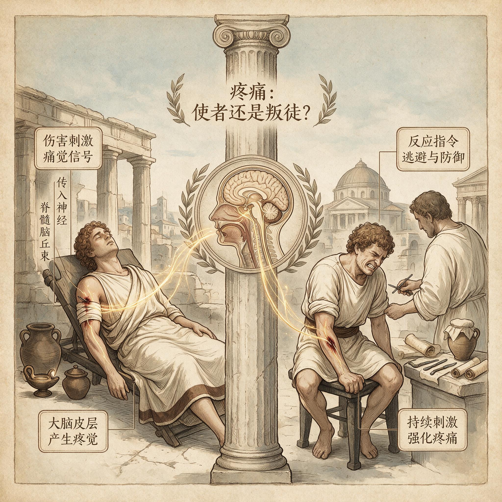

第 1 章
疼痛是个叛徒吗
如果你把手指按在滚烫的炉子上，你会在一瞬间把手抽回来。这个动作快到不可思议——手已经缩回到安全距离，你的大脑才来得及意识到“好烫”。这中间发生了什么？一个信号从你的指尖出发，沿着神经以每小时将近四百公里的速度冲向脊髓，在那里，一个决定在千分之一秒内被做出：撤退。不需要请示大脑，不需要权衡利弊，甚至不需要你的同意。脊髓直接给手臂肌肉下达了命令。然后，迟了半拍，疼痛感才抵达意识层面。它带来的信息大致是：危险已经发生，需要检查受损部位，并且记住这件事。
这个时间差暴露了一个我们很少注意到的事实：疼痛不是一个被动的报警器。它是一套主动的、有时甚至绕过你意识直接行动的指挥系统。但我们对它的理解，却几乎全是错的。

疼痛反射弧示意图
AI 生成插图，非史实影像。
我们生活在一个把疼痛当作故障的时代。头痛了，吃止痛药。腰痛了，贴膏药。关节不舒服，找消炎药。每一次不适都被解读为身体某个零件出了问题，就像汽车仪表盘上突然亮起的红灯，意味着该去修理厂了。
这个比喻如此深入人心，以至于我们几乎从未怀疑过它。红灯是故障的信号，疼痛也是。红灯不该亮，疼痛也不该有。但如果你遇到一个人，他的仪表盘永远不会亮红灯，你会觉得他幸运吗？
1932年，一位医生记录了一个小男孩的病例。这个孩子从出生起就表现出一种奇特的“勇敢”——他摔倒了不哭，打针时面不改色，被热水烫到也毫无反应。起初父母以为他天生坚强，但很快，事情变得可怕起来。他开始咬自己的舌头，不是轻轻地咬，而是咬到鲜血淋漓，因为他感觉不到组织正在被撕裂。他的手指在玩耍中被割伤，伤口反复感染，因为他从不觉得需要保护那个部位。
最触目惊心的是他的关节。由于没有疼痛的警告，他会长时间保持同一个姿势，让关节承受不正常的压力。软骨被磨穿，骨骼开始直接摩擦骨骼，关节肿胀变形到几乎无法辨认原来的形状——这是夏科氏关节，一种在没有痛觉保护下才会出现的严重病变。这个孩子患的是一种后来被称为先天性痛觉不敏感症的罕见疾病。
在某些类型中，患者还伴随无汗症，即先天性痛觉不敏感伴无汗症。他们的汗腺无法正常工作，体温调节系统存在致命漏洞。在没有疼痛的世界里，烫伤、骨折、感染、高热——这些威胁如影随形，却没有任何内部警报会响起。这不是一个关于承受过多痛苦的故事。这是一个关于彻底失去保护的故事。
那些患有先天性无痛症的孩子，往往活不到成年。他们不是死于某种特定的疾病，而是死于无数本可避免的伤害的累积。每一次没有痛觉的小伤，都可能在不知不觉中演变成致命的感染。每一次无痛性骨折后继续行走，都让骨骼畸形愈合，最终丧失行动能力。他们的身体不是更强大，而是更脆弱。缺少了疼痛这道密令，整个身体的防御体系出现了系统性的崩溃。
这个残酷的自然实验告诉我们一件事：疼痛不是身体的故障。恰恰相反，失去疼痛才是真正的故障。
那么，疼痛到底是什么？要回答这个问题，我们需要把时间往回拨，去看一看这道密令在生命史上的起源。
在脊椎动物的演化早期，就已经出现了一套对有害刺激做出反应的原始系统。
让我们以七鳃鳗为例。这种看起来像鳗鱼的原始脊椎动物，在进化树上占据着一个关键位置——它们的祖先是最早拥有脊椎的生物之一。七鳃鳗没有发达的大脑皮层，没有复杂的意识，但它们有一个非常明确的能力：当身体某个部位受到强烈的机械刺激时，比如被尖锐物体戳到，它们会迅速扭动身体游开。
这个反应背后的神经通路相对简单。在七鳃鳗的皮肤里，分布着一类特殊的神经末梢，它们对可能造成组织损伤的刺激特别敏感——强烈的压力、刺入、高温。这些末梢就是最原始的伤害感受器。当它们被激活时，电信号沿着神经纤维传到脊髓，然后几乎立即触发运动神经元，命令肌肉收缩，让身体远离危险源。
请注意，这个过程和人类缩手反射在本质上是相同的。它不需要大脑参与，不需要意识，甚至不需要“痛苦”这种主观体验。它只是一个预设的、刻板的撤退命令：检测到威胁，执行逃避。
这套系统在进化上极其古老。它之所以被保留下来，原因很简单：那些没有这种反射的个体，更容易在遇到危险时受伤或死亡。
它们活不到繁殖的年龄，它们的基因不会传递下去。所以在漫长的自然选择中，能感受到伤害性刺激并做出回避反应的个体，获得了明显的生存优势。但七鳃鳗的逃避反射不会留下深刻的记忆。它们不会在事后“回想”起被戳的经历，不会因此改变长期的行为模式。这次逃开了，下次遇到同样的刺激，它们还是需要重新经历一遍检测到威胁然后逃避的过程。这套系统是反应性的，不是学习性的。
真正让疼痛变成我们现在所理解的样子的，是哺乳动物演化中出现的一次重大升级。在哺乳动物的身体里，伤害感受器进化成了一个极其精细的网络。不同类型的感受器专门负责检测不同类型的威胁：有的对机械损伤敏感，有的对极端温度敏感，有的对化学刺激敏感——比如组织发炎时释放的那些物质。这些感受器分布在皮肤、关节、内脏、血管壁，几乎无处不在，构成了一套覆盖全身的威胁监测系统。但真正革命性的变化发生在大脑。当伤害感受器的信号沿着脊髓上传时，它们不仅仅触发运动反射。
在哺乳动物中，这些信号会到达大脑的多个区域，其中包括边缘系统——大脑中负责情绪和记忆的核心区域。当疼痛信号到达这里时，它不再只是一个中性的“检测到威胁”报告。它被染上了一层强烈的情感色彩——不愉快、恐惧、焦虑，那种我们称之为痛苦的主观体验。
这就是疼痛区别于简单逃避反射的关键。它不是告诉你“那里有危险”，而是让你感到难受。为什么？进化为什么要设计出这样一种让人不舒服的体验？为什么不能只是亮一盏中性的警示灯，就像手机上的低电量提醒那样？答案藏在学习机制里。
想象一只老鼠第一次遇到一只猫。在逃跑过程中，猫爪在它背上划出了一道伤口。如果没有痛觉，这次遭遇就只是一次中性的信息更新：它获得了一个关于猫的某种印象。这只老鼠可能会在第二天再次接近猫，因为它并没有从第一次遭遇中学到这件事的危险性。但有了疼痛，情况完全不同了。伤口的疼痛会持续存在，每一次移动都提醒着它这次遭遇的致命性。
那种不愉快的感受会在它的大脑里留下深刻的印记。下次它闻到猫的气味时，边缘系统会立即激活恐惧反应，让它远远避开。疼痛教会了它一件事——永远不要再让自己陷入那种境地。
这就是疼痛的核心功能：它不是惩罚，而是教育。它的痛苦感不是设计的缺陷，而是设计的核心。只有足够不愉快的体验，才能在大脑里刻下足够深刻的记忆。只有足够刻骨铭心的教训，才能改变一个动物的长期行为模式。
从这个角度看，疼痛是身体发出的一道密令。它的内容不是“你受伤了”，而是要求将这次经历标记为危险，并强制存入记忆。它的强制性就体现在那个痛苦里——你必须服从，因为你无法忍受不服从的代价。
那些患有先天性无痛症的人，失去的不仅仅是警报系统。他们失去的是一整套学习机制。他们不会从伤害中吸取教训，因为伤害从来不会让他们感到难受。一个正常的孩子被火烫过一次之后，会终身对火保持警惕。
但一个无痛症的孩子可能反复把手伸向火焰，因为每一次被烫伤都只是一次中性的触觉体验，没有任何不愉快的感觉强迫他去记住。疼痛这道密令，用痛苦作为强制执行的工具，确保了生存经验能够被植入记忆的最深处。到这里，我们似乎已经找到了答案：疼痛是忠诚的哨兵，是进化塑造的完美保护机制。它应该被感谢，而不是被痛恨。
但问题是，如果疼痛如此完美，为什么会有慢性疼痛？为什么会有数百万人在没有组织损伤的情况下，日复一日地承受着疼痛的折磨？为什么我们的哨兵会在和平时期反复拉响警报？让我们走进一间普通的现代办公室。
一个三十五岁的上班族正坐在电脑前。他的姿势在进化史上找不到任何先例：脊柱弯曲成C形，肩膀前倾，头部微微向前探出，双臂悬在身体前方，手指在键盘上重复着每小时数千次的小幅度动作。他的臀部被固定在椅子上，腰部肌肉处于持续的、低强度的紧张状态，以维持这个不自然的姿势。他已经这样坐了三个小时。在他的下背部，一组叫做竖脊肌的肌肉正在发出无声的抗议。
长时间保持同一姿势意味着某些肌肉纤维一直在收缩，从未得到放松。血液流动变慢，代谢废物开始堆积，局部组织出现了轻微的缺氧。这些变化激活了肌肉深处的伤害感受器——那些本来用于检测组织损伤的神经末梢。信号沿着脊髓上传，到达大脑。他的意识层面感知到的是下背部隐隐作痛，一种钝钝的、持续的不适感。
这道信号在远古意味着什么？在更新世的草原上，长时间保持同一姿势通常不是好事。它可能意味着你受伤了，无法移动，正在成为捕食者的目标。或者它意味着你被困住了，需要挣脱。又或者它意味着你的身体正在承受某种不正常的压力，需要立即调整——站起来，活动一下，改变姿势，让肌肉恢复血液循环。疼痛的密令是清晰的：改变你现在的状态，立刻。
但在现代办公室里，这道密令无处可去。他不能站起来在草原上奔跑。他不能改变身体姿势去攀爬树木或追踪猎物。他的环境要求他继续坐着，继续维持那个不自然的姿势，继续完成屏幕上的工作。疼痛信号被接收了，但它的指令无法被执行。
于是身体提高了信号的强度——更多的伤害感受器被激活，局部炎症反应加剧，肌肉越来越僵硬。疼痛从隐隐的不适升级为持续的钝痛，再升级为尖锐的刺痛。但环境依然没有改变。他还在坐着。
这就是现代慢性疼痛的核心困境。它不是一个故障的信号，而是一个无法被执行的命令。这套为更新世草原设计的警报系统，被原封不动地搬进了现代写字楼。它依然在忠实地工作，检测到异常就拉响警报。但它无法理解，为什么这个人类在接收到“站起来活动”的指令后，依然一动不动。它无法理解“截止日期”、“绩效考核”、“加班文化”这些概念。它只知道，危险信号还在，必须继续报警。久而久之，事情变得更糟。
持续的疼痛信号开始改变神经系统本身。脊髓中的神经元变得越来越敏感，它们开始把正常的触觉信号也解读为疼痛——这就是所谓的中枢敏化。大脑中负责处理疼痛的区域发生了结构性变化，疼痛的门槛降低了，即使是轻微的刺激也能触发强烈的痛觉反应。哨兵变成了狼来了的孩子。
这种长期、低强度的信号错配，其代价远不止于局部疼痛。它可能将身体拖入一种更隐蔽、更系统性的状态——慢性低度炎症，一种被研究者称为“无声的燃烧”的持续免疫激活。这正是许多现代慢性不适与疾病的共同通路之一。
在先天性无痛症患者的病历档案里，有一种损伤反复出现，它如此典型，以至于医生们给它起了一个专门的名字：无痛性骨折。一个正常的孩子如果在奔跑中摔倒，胫骨承受了过大的冲击力，骨膜上的伤害感受器会立即发出剧烈的疼痛信号。这种疼痛的强度足以让孩子停下来，哭出声，不再继续用那条腿承重。疼痛在这里扮演的角色不是报警，而是强制执行保护措施——它用痛苦迫使你停止使用受损的部位，给骨骼愈合创造机会。
但无痛症的孩子没有这道强制令。摔倒之后，他们站起来继续跑。骨骼上出现的微小裂缝在持续承重下不断扩大，从发丝般的应力性骨折发展成完全断裂。更可怕的是，断裂的骨骼在没有任何固定的情况下继续被使用，断端反复摩擦，导致骨骼无法正常愈合，形成假关节——一种本不该存在的、在断裂处形成的异常活动结构。这不是罕见并发症，而是无痛症患者骨骼系统的必然命运。他们的病历读起来像一本骨科教科书里所有最严重损伤的合集，区别只在于，这些损伤的发生没有伴随任何一声喊叫。
这种沉默的毁灭同样发生在他们的口腔里。正常婴儿在出牙期间会感到牙龈不适，但他们不会把自己的舌头咬到血肉模糊，因为疼痛会在组织真正受损之前就阻止咬合动作的继续。无痛症的婴儿没有这道刹车。他们的舌头边缘布满疤痕组织，有些孩子甚至咬掉了自己的舌尖。乳牙萌出后，他们开始咬自己的手指、嘴唇、口腔内壁，任何能被牙齿够到的软组织都成为无意识攻击的目标。父母不得不给孩子戴上特制的口腔护具，甚至在极端情况下拔掉全部乳牙——在没有痛觉保护的世界里，牙齿不是进食工具，而是随身携带的武器。
这些细节指向一个更深层的真相：疼痛不是单一的保护机制，而是一整套行为调控系统。它不仅在伤害发生时拉响警报，更在伤害发生之前就介入，通过持续的低强度信号告诉身体什么动作是安全的、什么姿势需要调整、多大的力度是合适的。我们每一次调整坐姿、每一次换手提重物、每一次在感到不适时停下来，都是在回应这道无声的指令。无痛症患者失去的，正是这套在意识层面之下持续运行的自我调控系统。
要理解这套系统是如何演化出来的，我们需要回到更古老的进化节点。七鳃鳗的逃避反射虽然简单，但它包含了一个关键的设计原则，这个原则在后续五亿年的脊椎动物演化中被不断强化和精细化。在七鳃鳗的脊髓里，伤害感受器的传入纤维直接与运动神经元形成突触连接。这意味着从检测到威胁到执行逃避之间，只隔着一个突触的距离。这是整个动物界最快的神经通路之一。
但这个速度是有代价的：它完全绕过了任何可能的判断环节。七鳃鳗无法区分不同类型的威胁，无法根据环境调整反应强度，无法在逃跑和战斗之间做出选择。它的反应是刻板的、全或无的——要么逃，要么不逃。
这套系统的优势在于可靠性。在生死攸关的时刻，速度比精确更重要。一个不需要思考的撤退命令，比一个需要权衡利弊的决策系统更可能保住性命。自然选择在这里做出了一个明确的取舍：宁可因为误报而浪费能量逃跑，也不能因为延迟而成为捕食者的午餐。
当脊椎动物演化到哺乳动物阶段时，这套系统经历了一次根本性的重构。伤害感受器不再直接连接运动神经元，而是通过复杂的中间网络传递信号。这个改变看似降低了反应速度，实际上却开启了一个全新的可能性：信号可以被调节、被整合、被赋予意义。在哺乳动物的脊髓背角，伤害感受信号在向上传递之前，会先经过一个叫做胶状质的区域。
这里密集分布着中间神经元，它们有些是兴奋性的，会放大疼痛信号；有些是抑制性的，会减弱疼痛信号。更关键的是，这些中间神经元还接收来自大脑的下行投射——大脑可以直接命令它们降低或提高疼痛信号的强度。这就是为什么战场上的士兵有时在受伤后感觉不到疼痛，直到战斗结束才发现伤口。不是伤害感受器没有工作，而是大脑主动关闭了疼痛的门控。在那种情境下，逃跑或继续战斗的优先级高于保护受伤部位。
它不断地喊危险，但每一次都没有真正的组织损伤。直到有一天，当真正的危险出现时，我们可能已经不再信任它的警报。或者更糟——我们已经被它不断响起的警报折磨得精疲力竭。这不是疼痛本身的错。它依然在忠实地执行着进化赋予它的使命。
问题在于，它被设计用来应对的环境，已经和它实际面对的环境完全不同了。在更新世，持续数周的腰痛可能意味着严重的脊柱损伤，需要长时间的保护和休息。但在二十一世纪，持续数周的腰痛往往意味着你需要换一把更好的椅子，调整坐姿，或者每隔一小时站起来走走——而疼痛本身却无法区分这两种情况。
这就是进化生物学家所说的错配。我们的身体携带着一套为另一种生活方式设计的指令系统，却要在完全不同的环境中运行。疼痛的密令依然有效，但它的触发条件和执行方式，已经和我们实际面临的风险脱节了。我们真正该对付的，不是疼痛本身。那个在电脑前感到下背隐隐作痛的上班族，他的疼痛是真实的。
它背后有真实的生理过程，有被激活的伤害感受器，有局部组织的缺氧和代谢紊乱。但他的疼痛也是错配的产物——一个为草原设计的报警系统，在格子间里找不到正确的响应方式。他可能会吃一片止痛药，暂时关闭那个警报。
但警报本身没有错。它只是在执行一道已经过时的命令，在一个它无法理解的世界里。疼痛不是叛徒。它从来都不是。它是最忠诚的哨兵，忠诚到即使环境已经彻底改变，即使它的警报已经不再指向真正的威胁，它依然在坚守岗位，一遍又一遍地重复着那道上百万年来从未改变过的密令：保护这个身体，不惜一切代价。
问题在于，我们还没有学会如何在这个新世界里，正确地回应它的呼唤。而另一种同样古老、同样被误解的身体信号——发热——正面临着几乎相同的困境。